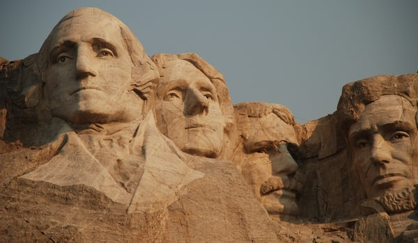

Presidential Battle Royale
Ever wonder who would win an all-out melee consisting of all the American presidents throughout history? We have handpicked the 3 presidents we think are most likely to be the last standing, and will be taking a look at their physical attributes, fighting history, and general cocksureness. Our contenders include William Howard Taft, Theodore "Teddy" Roosevelt, and George Washington.
